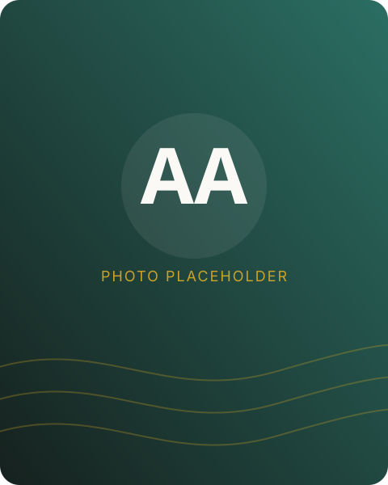

The journey so far
From a computer engineering classroom in Ropar to production systems at Microsoft, and now research-grade computer science at UW–Madison.

I'm Akhil — a Master's student in Computer Science at the University of Wisconsin–Madison, and before that, a Software Engineer at Microsoft for two and a half years. I studied Computer Science and Engineering at IIT Ropar, graduating in 2023.
At Microsoft, I worked on systems at the core of the Commerce ecosystem — the subscription management platform behind volume licensing for products like Office 365, Dynamics 365, Intune, and Microsoft Teams. I refactored request-handling services to cut query latency and message backlog by 90% during quarter-close load spikes, led authentication migrations from certificates to Azure Active Directory, and built an SRE agent that automated incident triage, cutting manual effort in half. Along the way I resolved 100+ high-impact customer escalations and drove security initiatives spanning threat modeling and code integrity enforcement across 50+ production VMs.
That work is what pulled me toward AI agents and distributed systems — watching an automated triage agent save engineers hours every week made it clear how much leverage well-designed autonomous systems can create. It's part of why I'm now at UW–Madison, going deeper into the systems and AI fundamentals that sit underneath the tools I was already building on the job.
Outside of a terminal, I'm usually training for my next run, out on a walk with no particular destination, deep in a book, or thinking through questions of philosophy and spirituality — pursuits that, in their own way, teach the same patience that long-horizon engineering does.
Personal interests
Education & experience
MS, Computer Science
Graduate coursework and research in systems, AI, and distributed computing.
Software Engineer
Subscription management systems for Microsoft's non-Azure commerce ecosystem — Office 365, Dynamics 365, Intune, and Teams.
B.Tech, Computer Science & Engineering
Foundation in data structures, algorithms, operating systems, and software engineering.